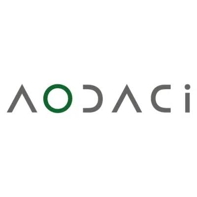

Empresas com atividade documentada nesta área
Exemplos para compreender funções e modelos de trabalho. As atividades são atribuídas às fontes oficiais consultadas; não constituem uma recomendação comercial.

AODACi
Desenvolvimento e fornecimento de brindes
O relatório de sustentabilidade descreve seleção de materiais, fornecedores e desenho do produto. São declarações institucionais com âmbito próprio.
Ler o perfil de AODACi →Fontes: AODACi — Relatório de sustentabilidade 2024, publicado em setembro de 2025

PF Concept
Países Baixos · sede publicada
Fornecedor profissional, desenvolvimento e personalização
Publica estratégia ambiental, documentação e critérios de transparência de materiais e produtos, sem cobertura uniforme de toda a oferta.
Ler o perfil de PF Concept →Fontes: PF Concept — Estratégia e progresso de sustentabilidade · PF Concept — Transparência e documentação de produto

Giving Europe
Tiel, Países Baixos · sede
Grossista com impressão e logística
Documenta uma seleção de produtos com cadeia de custódia FSC e disponibiliza o certificado para verificar o âmbito.
Ler o perfil de Giving Europe →Fontes: Giving Europe — Atividade, sede e operação · Giving Europe — Certificado de cadeia de custódia publicado

Stricker
Coimbra, Portugal · sede
Desenvolvimento de produto e distribuição
Publica políticas de sustentabilidade aplicadas à conceção e comercialização. A associação não equivale a certificar todos os brindes.
Ler o perfil de Stricker →Fontes: Stricker — Compromissos e políticas de sustentabilidade
Compreender esta área
“Brindes Ecológicos” é uma designação editorial transversal. Reúne empresas com informação pública sobre materiais, origem, rastreabilidade ou redução de impacto. Uma empresa pode aparecer também em Papelaria, Tecnologia, Casa ou Têxtil.
Critérios de leitura
A inclusão não certifica a empresa nem torna toda a sua oferta ambientalmente superior. Material reciclado, conteúdo orgânico, possibilidade de reutilização e certificação são afirmações diferentes. Devem ser verificadas quanto a objeto, âmbito e validade; não se comparam desempenhos sem base equivalente.
Fontes e âmbito
Fontes oficiais consultadas para as atividades atribuídas às empresas. As explicações das funções e do percurso são sínteses editoriais; não descrevem um modelo universal nem avaliam o desempenho dos fornecedores.
- AODACi — Relatório de sustentabilidade 2024, publicado em setembro de 2025 — consulta: .
- PF Concept — Estratégia e progresso de sustentabilidade — consulta: . Conteúdo consultado na indexação pública da página oficial; a abertura direta não respondeu nesta consulta.
- PF Concept — Transparência e documentação de produto — consulta: . Conteúdo consultado na indexação pública da página oficial; a abertura direta não respondeu nesta consulta.
- Giving Europe — Atividade, sede e operação — consulta: .
- Giving Europe — Certificado de cadeia de custódia publicado — consulta: .
- Stricker — Compromissos e políticas de sustentabilidade — consulta: .